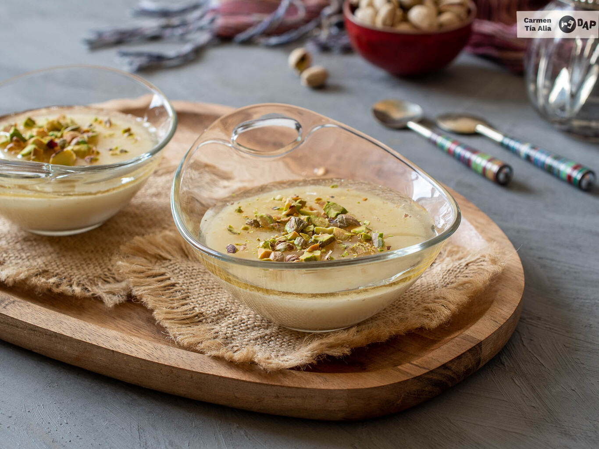
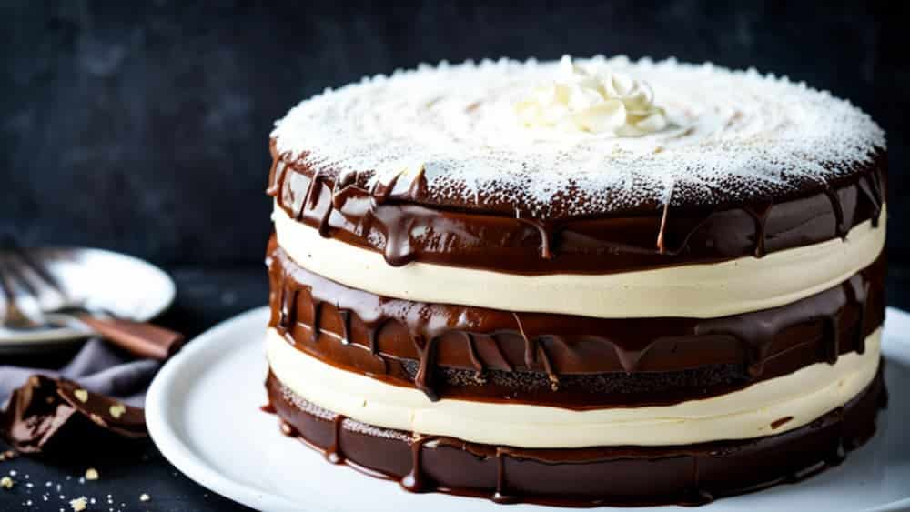
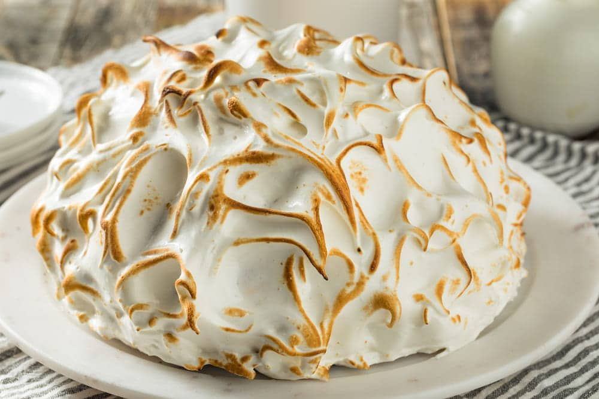
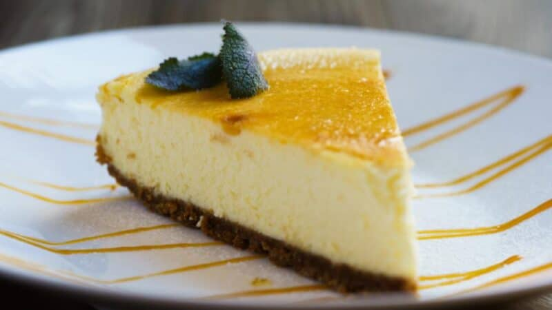

Postres para cada ocasion
Dulces postres practicos que no fallan a la hora de un antojo.

Helado de frambuesa ligero y cremoso
Refresca tu día con este helado natural, lleno de fruta y sin excesos de azúcar. Su textura cremosa y suave lo hace perfecto para disfrutar en cualquier momento, y al prepararlo en casa puedes controlar los ingredientes y adaptarlo a tu gusto. Fácil de hacer y lleno de sabor, es ideal para toda la familia y una manera deliciosa de sumar frutas .
Ver receta
Mousse de chocolate vegana
El postre que todos quieren repetir. Sin huevos, solo chocolate y aquafaba. Textura aérea, sabor intenso y un toque de sorpresa en cada cucharada. Prepárala en casa y conquista a todos con este clásico reinventado.
Ver receta
Flan libanés
Un postre suave y elegante, fácil de preparar en casa. Su cremosidad se combina con los aromas de azahar y rosas, y al servirlo con almíbar y pistachos picados se convierte en un detalle sofisticado que conquista a todos.
Ver receta
Bombón suizo
Si sos fanático del chocolate intenso y las texturas suaves, esta torta bombón suizo es para vos. Cada porción combina esponjosidad, cremosidad y un baño brillante que se funde en la boca. Perfecta para cumpleaños, celebraciones o para sorprender en una cena especial, es ese postre que roba miradas apenas llega a la mesa.
Ver receta
Tarta Alaska
Sorprende con un postre elegante y espectacular que combina bizcocho, helado cremoso y merengue dorado. Fácil de preparar y con un acabado que impresiona a todos, perfecto para celebraciones o momentos especiales en los que quieras un postre que sea toda una experiencia.
Ver receta
Pay de Queso
Deléitate con un cheesecake suave y aterciopelado que combina una base crujiente con un relleno cremoso de queso. Fácil de preparar y personalizable con frutas, chocolate o caramelo, es el postre perfecto para conquistar a toda la familia y disfrutar en cualquier ocasión especial.
Ver receta